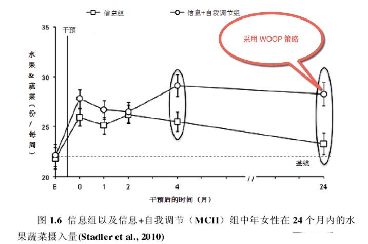
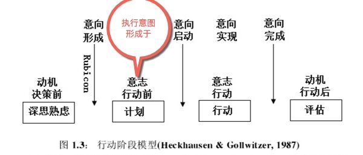
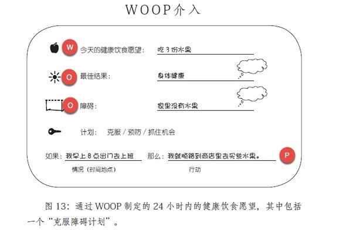

此篇为 读书(论文)笔记
它能帮助处于恋爱的个体减少不利于恋爱关系的行为，有助于提高他们对恋爱的承诺。
它是什么呢？
我们来看看。
1.0 hack_mind ，不改变认知（信念、价值观）
它的好处是 能够简单地帮助我们达成目标，促进我们采取行动
它不是通过改变认知方式，进而辅助目标实现，相反，它只是在特定场景出现时自动开启一些可以最终帮助我们实现目标的行动
1.1 主要应用范围
- 健康
比如，医疗健康领域的自我控制（如吃健康的蔬菜水果）
比如，对身体锻炼的促进
正常群体的锻炼以及恢复期的病人。在健康知识学习的基础上增加了WOOP策略干预的中年女性在未来的 1 个月内的身体活动量是仅学习健康知识的中年女性的身体活动量的 2 倍，而且效果持续了4 个月。
人际生活
比如，它能帮助处于恋爱的个体减少不利于恋爱关系的行为，有助于提高他们对恋爱的承诺。
。。。。专业
学业提升，考试过关。。。WOOP 在这一块的力度蛮大的，有专门的软件 。
。。。
适用于新习惯的养成吗？
1.2 WOOP 成新习惯
采用woop 策略，形成了习惯的例子：

（原图引自王国霞博士论文）
它不用改变认知方式（比如不必考虑你在这个方面是固定心智还是成长心智，只要你照着做了，你自动会形成一个临时习惯）
这策略是谁提出来的呢，确切的说，是由两位心理学家提出。
2.0 概念背景
首先是德国汉堡大学心理学家彼得 · 戈尔维策（Peter Gollwitzer）提出了【执行意图】，他是研究 “如果 - 那么” 计划的第一人，论文高产。
然后是加布里埃尔 • 厄廷根（Gabriele Oettingen ），彼得 ·戈尔维策的太太，美国纽约大学及德国汉堡大学心理学教授, 【心理对照】概念的提出者。
最近国内引进出版了她一本书 “Rethinking Positive Thinking”，翻译为 《woop思维心理学》 ，里面她有提到把心理对照与执行意图合二为一的故事：
有一天。。。Oettingen。。。。自我调控的策略：WOOP。。。
2.1 概念构成
WOOP 由四个单词合起来。分别是：
W （ wish 目标 / 愿望 ）
O （ outcome 收获 / 成果 ）
O（ obstacles 障碍 ）
P（ plan 计划 ）
WOOP , 它是有效的促进目标追寻的自我调节策略。
可是woop的关键点，你是否注意了呢？
如果你计划横跨很多领域，想要的很多，那么它也帮不了你太多。
实际的情况是，要利用好它的双眼 「OO 」即聚焦在 Outcome 和 Obstacle 上。
我们来看它的内核：
3.0 WOOP 策略内核
当初厄廷根教授为了便于推广这个策略，起了个简单易记忆的新名——WOOP.
而从学术文章上，我们看到它原初的名字MCII：Mental Contrasting With Implementation Intentions 。
还是清晰可见WOOP 核心其实是： Mental Contrasting【心理对照】 + Implementation Intentions【执行意图】
【心理对照】，帮助个体承诺于高期望的目标，放弃低期望的目标，聚焦个人资源。
【执行意图】能帮助解决目标努力过程中的意志问题，缩小目标意向和实际行动中的鸿沟。减少行动瘫痪。
心理对照和执行意图分别作为目标设定和目标执行阶段的自我调节策略，能有效地帮助个体更成功地实现目标（Oettingen 2013）.
心理对照与执行意图相结合是一个对目标追寻更加有效的自我调节策略。
- 一方面, 心理对照不仅能提供执行意图发挥作用的重要前提 -- 强烈的目标承诺, 而且能帮助个体确认现实中的障碍, 为形成有效的
如果 -- 那么计划奠定基础。- 另一方面, 执行意图可以通过减少目标与行为之间的鸿沟增强心理对照的效果。研究表明心理对照与执行意图能有效地促进目标追寻。
3.1 心理对照
心理对照 mental contrasting (Oettingen et al., 2001)
心理对照是指个体清晰地构造出关于目标实现以后的收获以及现实中可能遇到的障碍的心理表征。
就是想象一个理想中的未来图景（比如改善个人健康行为），然后反思现在有哪些行为阻碍了你达到那个未来图景（比如遇到诱惑的时候就放弃锻炼）。这样子一个心理对照的过程就把那个你很希望实现的未来变成一种目标承诺。
把握两个重要点
- 形成内在承诺
- 分解至易达成、 做成的概率大的目标 目的是，感受行动的必要性，形成目标承诺。
3.2 执行意图
执行意图 (implementationintention)
定义：
是将线索和目标定向的行为结合起来的
如果 - 那么计划, 是目标执行阶段的策略, 能有效地将目标意图变为行动, 减少目标与行为之间的鸿沟。执行意图，指将情境线索与有效反应联系起来的 “如果 - 那么” 计划，其结构为 “如果情境 Y 出现，我就启动行为 Z 以达成目标 X”（戈尔维策 1999）。
执行意向包含行动计划和应对计划两种：行动计划是关于在何时何地如何做何种目标相关行为的计划；比如我打算10点到12点在图书馆写完论文；应对计划是关于如何应对在目标追寻过程中遇到的障碍和问题的计划——比如，如果朋友叫我去喝酒，我会礼貌地拒绝；
人的行动可以分为四个阶段，分别是决策前阶段（predecisional phase），意志行动前 / 决策后阶段（postdecisional phase），行动阶段（actional phase）以及行动后阶段（postactional phase）。

（原图引自王国霞博士论文）
执行意图是在行动前阶段形成的，确定了在何时何地、如何反映已达成目标。是一种旨在帮助个体减少奋斗过程的意志问题，将目标意图转换为实际的行动。
一个人一旦开启了其执行意图，则一遇到相应场景，他都会做出可以达至其目标的行为。
执行意图有助于个体有效地完成目标追寻各个阶段的任务。比如启动目标，维持目标、还有停止追寻目标；
执行意图，不是通过认知导向（cognitive orientation）进而辅助目标之实现，相反，它只是在出现特定场景的时候自动开启一些可以最终帮助我们实现目标的行动。
戈尔维策的弟子，德韦克发表在 HBR的文章，有一个使用执行意图的个人比没有使用的人目标达成的对比数据
（原图引自 HBR 2015.5)
3.2.1 使用 if…then
- 制造 临时习惯
戈尔维策 将制定 “如果 - 那么” 计划描述为制造一种 “紧急习惯”（Instant Habits）。
执行意图跟习惯不同的一点是，执行意图需要内心存在一个念头，去开启这一自动行为，而习惯只需要一个人在遇到特定环境时经常而且持久地去做某个行为。与人类其他许多习惯不同，这种 “紧急习惯” 不会是人生之路的障碍，而会帮我们达成目标。
“if __ then___ ” (如果 - 那么) 计划之所以有效，是因为人类的大脑神经回路可以处理偶发事件。人类非常善于解码这类 “如果 x，那么 y” 形态的信息，并下意识地基于这种关联去指导行为。
当人们决定以确定的时间、地点、方式达成目标，他们就会在大脑里建立一种关联：在一定的场景或提示（如果 / 当 x 发生）下，应该伴随一种行为的发生（那么，我就做 y）。这种方式能够有效触发人们的行动意识。
- focus on 拦路虎
if ____ then____ 填空题，你会怎么填呢？
执行意图对于催生一些困难而不是容易的行为更有帮助。并且集中对付关键障碍！！
不要过多的oo ，认真集中于想象主要的收获成果，最关键的可控、外在、具体的障碍。
- 什么是可控的呢？
- 什么是外在的呢？
- 什么又是具体的呢？ 你问我那么多问题，我一时答不上来，对我现在讲着来说 怎么回答你好呢？不算具体的障碍，
- 注重锻炼 if 中 的成份中的情境线索的辨别能力
锻炼 if 中 的成份中的情境线索的辨别能力窍门在心理对照中。
当遇到线索时，目标相关的反应就会自动出现，表现出立即、效率、无意识；
执行意图的数量对目标达成的影响依赖与指令特征；要紧的是质量而不是数量。
4.0 练习作业
Oettingen教授 书中的一个示例：

我们要求她们将WOOP用在多锻炼和健康饮食的愿望上面。
首先，我们让她们选择想 要采用的锻炼方式，并鼓励她们找到自己最畏惧的障碍。
我们教这组被测试者建立3种“执行意图”。第一个“如果……那么……”计划旨在帮助她们克服在“心理 比对”过程中想到的障碍，如“如果我觉得没有时间出去轻松地散步，那么我就提醒自己：出去活动活动，我就会变得更高效了。”
第二个“如果……那么……”计 划旨在帮助她们克服这个障碍，如“如果一到5点，那么我就收拾东西离开办公室去锻炼。”
第三个“如果……那么……”计划旨在帮助她们寻找行动的好机会，如 “如果明天天气晴朗，那么我就去公园里慢跑半个小时。”
同时，我们让被测试者制定了有关锻炼的长期愿望和未来24小时愿望。此外，被测试者还围绕健康饮食 进行了上面所述的各个步骤。
实际上的步骤从头来，如下：
WOOP 策略步骤
1) 写下自己在某个领域的目标或愿望 ；
这个目标最好是有一定困难但又是可以达成的。一定挑战但不要太大的困难；
2) 具体想象实现这个目标或愿望的最好结果 （如感觉很自豪 很棒）；同样花点时间写下来；
3) 具体想象现实生活中阻碍实现这个目标或愿望的障碍（拦路虎），比如，急于求成，想放弃；
4) 想想这些具体的拦路虎会在什么时候在哪里出现。具体是哪些情境因素成为了你的障碍， 越具体详细越好；比如：
她认为通过记忆的测试很难。
那么就可以考虑了：我是在何时（白天还是晚上）、哪个地方（家里还是学校）不想记忆训练了？
5) 针对想象到的障碍，制定克服障碍的计划；
应对计划是预测目标达成（尤其是会遇到困难的目标）的稳定因素。
比如 或者遇到xx困难，那么我就找一个学员商量听听同伴的声音。
6) 计划的格式：如果我在xxx 拦路虎，那么我xxx行动
7) 适时回顾
4.1 练习过程
- 想象一个理想中的未来（比如改善个人健康行为），然后反思现在有哪些行为阻碍了你达到那个未来图景（比如遇到诱惑的时候就放弃锻炼）;
- 你觉得成功的概率有多大
- 你该追求这个目标吗
- 对比利益和障碍，你就能更加清楚地知道自己成功的把握有多大，对这个目标有多坚定了
- 这样子一个心理对照的过程就把那个你很希望实现的未来变成一种目标承诺；
- 写下愿望和已经在做的事情
- 想象实现时的场景，这个美好场景中的好处
- 思考夹在你和美好结局之间的障碍
- 列出一个好处，列出一个障碍，再来一个障碍，找出主要障碍！
- 然后 “如果 xxx 「障碍情境」....，那么...xxx行动...”
注意事项
国内的研究的一个实验显示，只有12.64% 的大学生会自发形成心理对照。虽然自发形成的有助于提高被试的目标承诺，但自发情况下，只有一小部分人能自发形成心理对照
- 期望低的目标，就不要用这个方法了；对自主目标更有效
- 完成woop 越认真越有利于目标达成；
- 严格刻板的行动计划不利于目标的达成；
不要想象太多的 Outcome 和 Obstacle , 有关键的[OO]即可：OO 两只眼，，
预期过多的收获和过多的障碍都不利于目标达成，反而是消极效果，过多的障碍无法把精力放在主要障碍上，也会阻碍个体对期望实现的概率的判断、降低为此目标付出努力的积极性。
MOOP自我干预中，最主要的是针对收获和障碍进行具体详细的想象。
未完。。。
欢迎联系 Arvin Yu , 邮箱：yuyandong@outlook.com
或长按以下二维码关注 公众号： 稻田无忧
本作品采用 知识共享署名-非商业性使用-禁止演绎 3.0 Unported许可协议 进行许可。